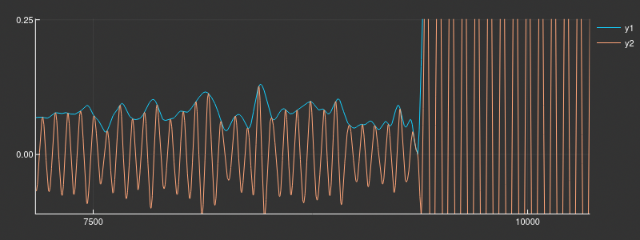

Zielsetzung
- Wetterdaten von Satelliten aus der Erdumlaufbahn zu empfangen
- Optimierung der Demodulierung und Decodierung der empfangenen Daten
- mit Hilfe der Daten aktuelle Wetterphänomene aufzeichnen
Vom Satellit zum Wetterbild
Abstract
Satellit sendet die Daten aus einer Umlaufbahn 500km über der Erdoberfläche
Empfang über eine V-Dipol Antenne
anschließende Signalumsetzung durch ein SDR
Signalverarbeitung durch Software
Antennenbau & Vergleich

Antennenarten
- V-Dipol Antenne
- QFH Antenne
- Kreuzdipol Antenne

Empfang und Dekodierung
Automatic picture transmition (APT)
analoges Übertragungsverfahren
noch heute im Einsatz


Ergebnisse
Zukunft
hight resulution picture transmition
Danksagung 🚀
- Ullrich Müller
Github
https://github.com/Konradrundfunk/JF_weathersatsunter der MIT Lizenz.